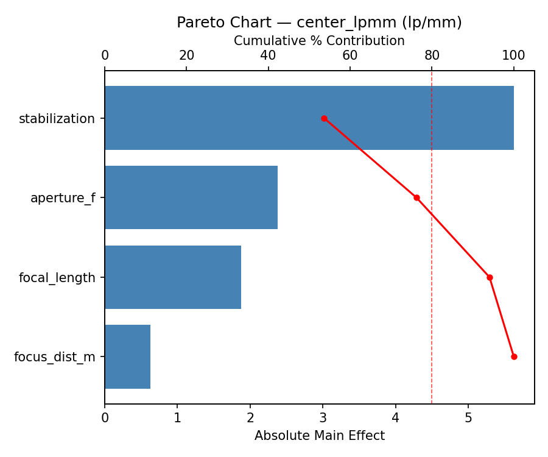
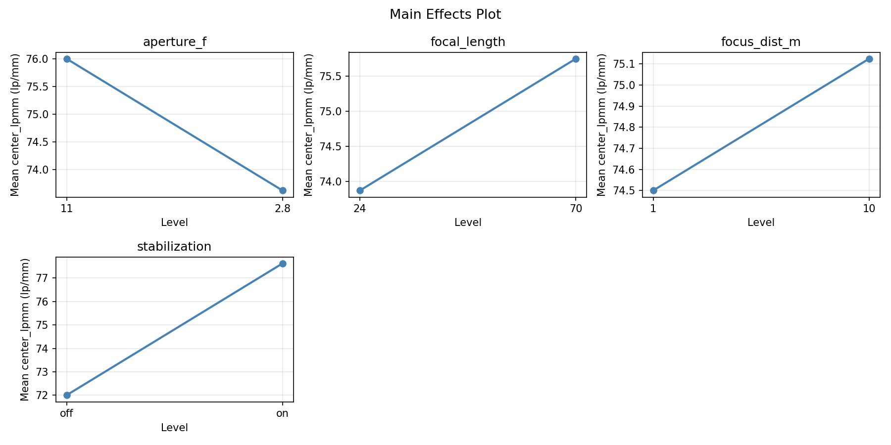
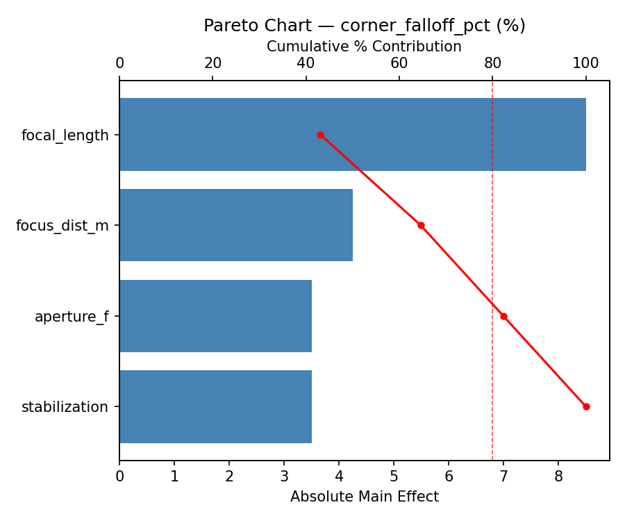
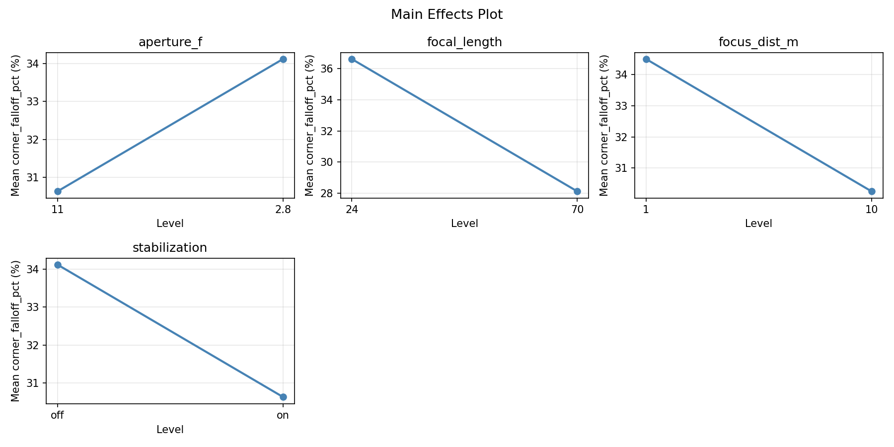
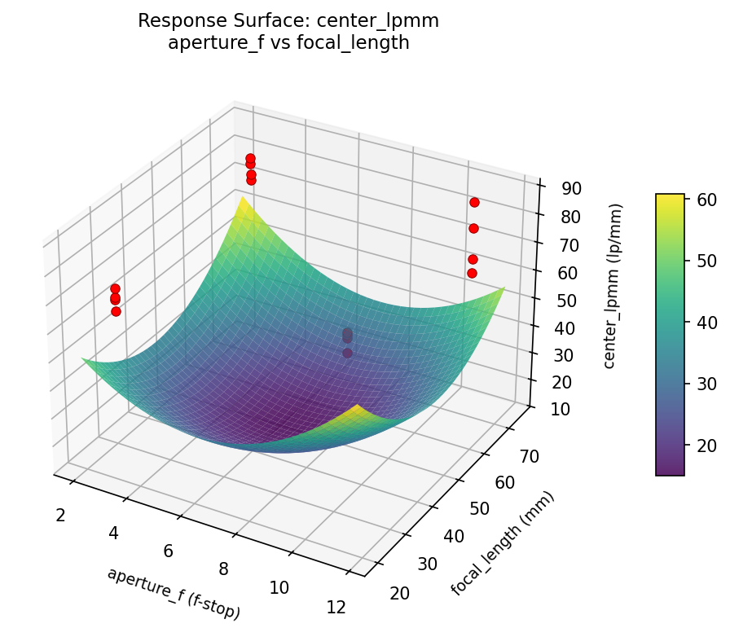
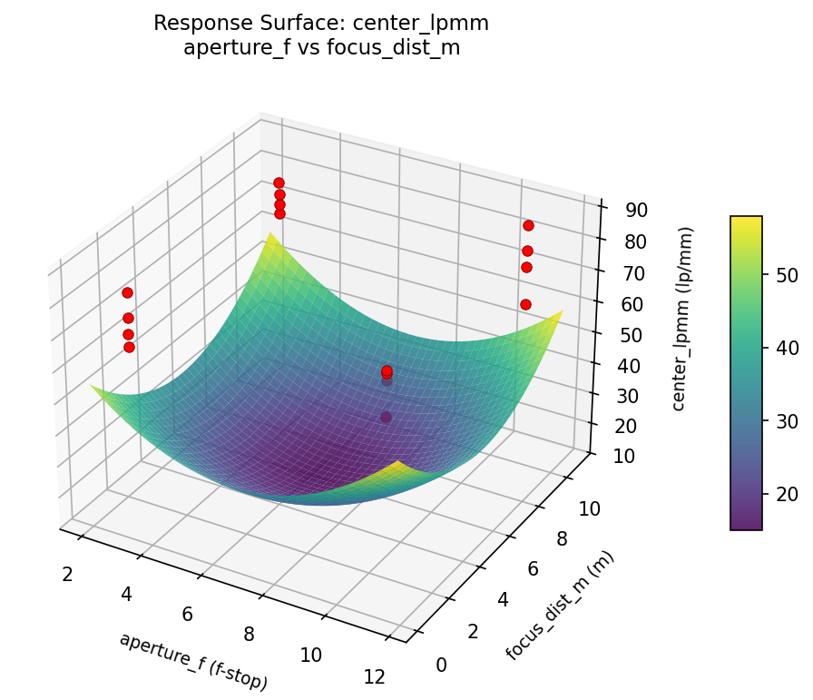
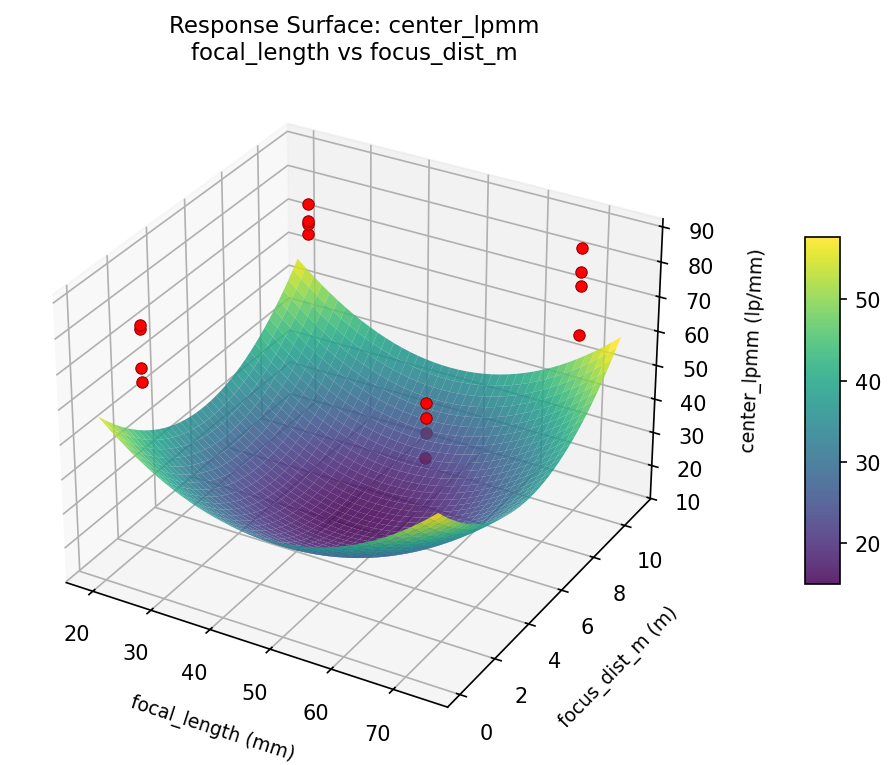
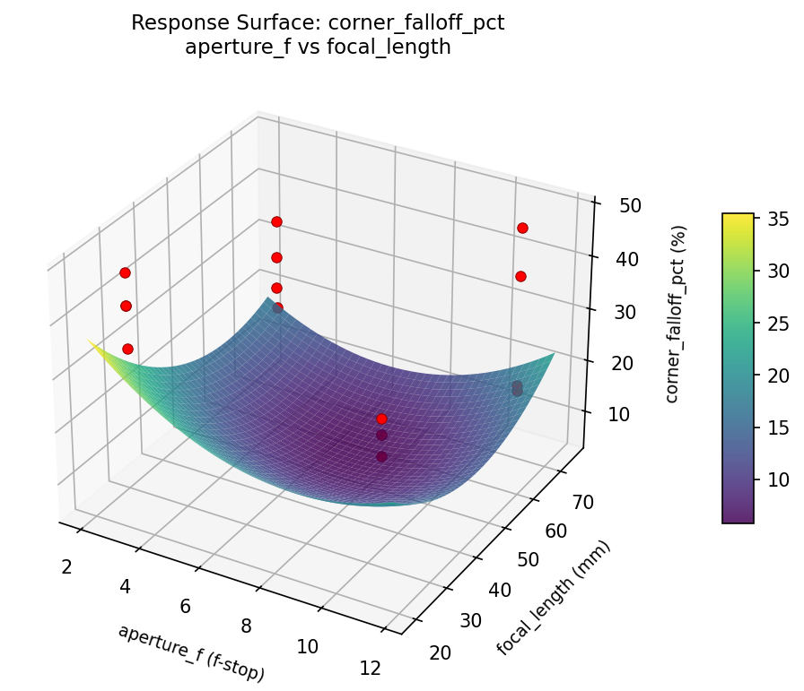
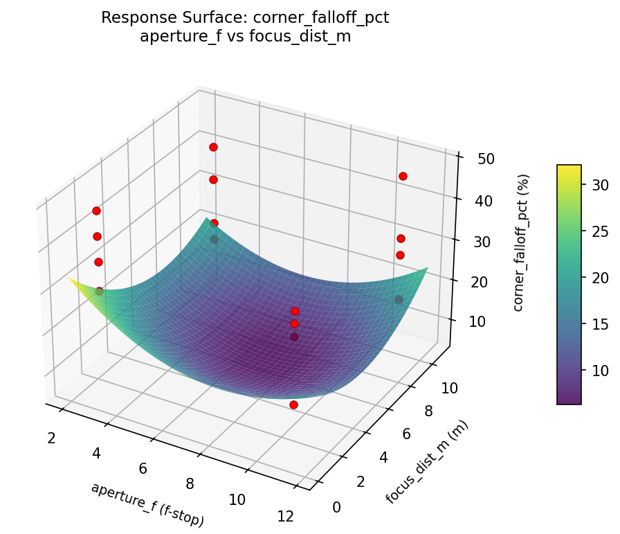
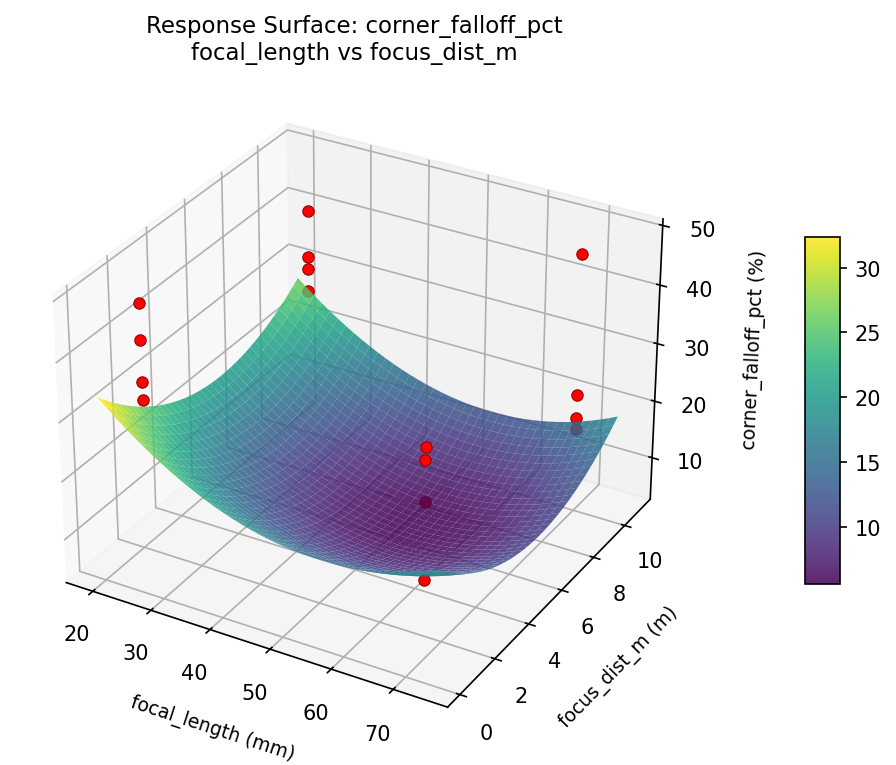

Full factorial of aperture, focal length, focus distance, and image stabilization to maximize center sharpness and minimize corner softness
| Factor | Low | High | Unit |
|---|---|---|---|
aperture_f | 2.8 | 11 | f-stop |
focal_length | 24 | 70 | mm |
focus_dist_m | 1 | 10 | m |
stabilization | off | on |
Fixed: body = full_frame, iso = 200
| Response | Direction | Unit |
|---|---|---|
center_lpmm | ↑ maximize | lp/mm |
corner_falloff_pct | ↓ minimize | % |
The Full Factorial Design produces 16 runs. Each row is one experiment with specific factor settings.
| Run | aperture_f | focal_length | focus_dist_m | stabilization |
|---|---|---|---|---|
| 1 | 2.8 | 70 | 10 | on |
| 2 | 11 | 24 | 1 | on |
| 3 | 2.8 | 70 | 1 | on |
| 4 | 2.8 | 70 | 10 | off |
| 5 | 11 | 70 | 10 | off |
| 6 | 11 | 24 | 10 | off |
| 7 | 11 | 70 | 1 | off |
| 8 | 11 | 24 | 1 | off |
| 9 | 2.8 | 24 | 1 | on |
| 10 | 2.8 | 24 | 10 | off |
| 11 | 11 | 70 | 1 | on |
| 12 | 11 | 70 | 10 | on |
| 13 | 2.8 | 70 | 1 | off |
| 14 | 11 | 24 | 10 | on |
| 15 | 2.8 | 24 | 1 | off |
| 16 | 2.8 | 24 | 10 | on |
| Feature | Value |
|---|---|
| Design type | full_factorial |
| Factor types | continuous (3), categorical (1) |
| Arg style | double-dash |
| Responses | 2 (center_lpmm ↑, corner_falloff_pct ↓) |
| Total runs | 16 |
Generated from actual experiment runs using the DOE Helper Tool.
Top factors: stabilization (53.6%), aperture_f (22.6%), focal_length (17.9%).
Pareto Chart

Main Effects Plot

Top factors: focal_length (43.0%), focus_dist_m (21.5%), aperture_f (17.7%).
Pareto Chart

Main Effects Plot

3D surfaces fitted with quadratic RSM. Red dots are observed data points.
center lpmm aperture f vs focal length

center lpmm aperture f vs focus dist m

center lpmm focal length vs focus dist m

corner falloff pct aperture f vs focal length

corner falloff pct aperture f vs focus dist m

corner falloff pct focal length vs focus dist m
